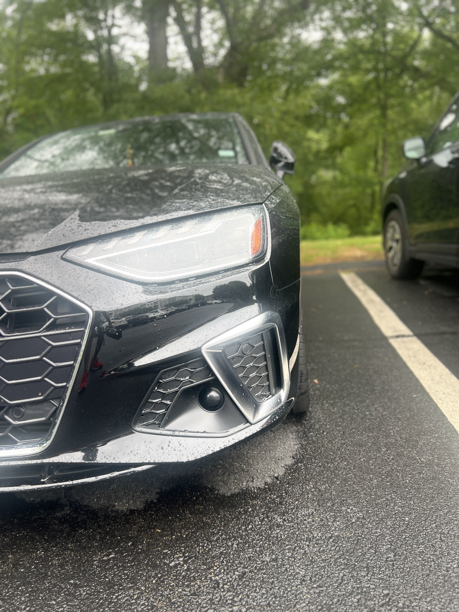

Hello! My name is Vin Patel, and I am currently a student at Umass Lowell. Pursuing Computer Science degree. I got interested in this pathway as I grew through my childhood surrounded by technology and made me hook to it and here I am following the pathway in becoming a software developer. Through each semester I am improving my skills in coding, and now by taking this course it's my first step toward becoming a front-end developer. Before, I had never worked with html or css; In high school only did javaScript but it wasn't much just touched the surface. So, I'm Hoping to get more experience with GUI.
Alongside becoming a developer, I am passionate about cooking, fitness, exploring new technology, traveling, and cars. I also love binge movies and shows when I am not coding. While on campus, when I don't have classes or homework, I spend time with my friends at the recreation center; playing pool or gym for exercise. My favorite cooking cuisines are Indian, Mexican, and Italian. For movies, I like more patriotic, thriller, and comedy. Additionally, as for sports my favorite is volleyball and cricket, as a routine on weekends, it is set to play outside or indoor either one of the sports.
| Place | City | Experience Level |
|---|---|---|
| Marshalls | Burlington, MA | 2.5 years |
| TeamLogic | Woburn, MA | 3 months |
| Market Basket | Burlington, MA | 6 years |
Picture of my car, side headlight image. It was good picture so that's why I am putting it.
